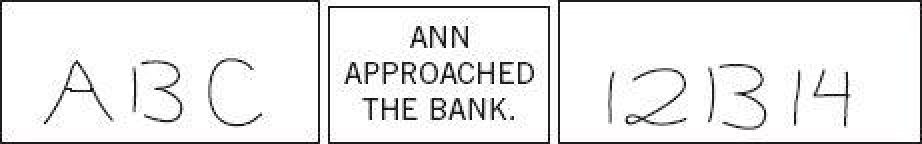

The great comedian Danny Kaye had a line that has stayed with me since my adolescence. Speaking of a woman he dislikes, he says, “Her favorite position is beside herself, and her favorite sport is jumping to conclusions.” The line came up, I remember, in the initial conversation with Amos Tversky about the rationality of statistical intuitions, and now I believe it offers an apt description of how System 1 functions. Jumping to conclusions is efficient if the conclusions are likely to be correct and the costs of an occasional mistake acceptable, and if the jump saves much time and effort. Jumping to conclusions is risky when the situation is unfamiliar, the stakes are high, and there is no time to collect more information. These are the circumstances in which intuitive errors are probable, which may be prevented by a deliberate intervention of System 2.
Neglect of Ambiguity and Suppression of Doubt

Figure 6
What do the three exhibits in figure 6 have in common? The answer is that all are ambiguous. You almost certainly read the display on the left as A B C and the one on the right as 12 13 14, but the middle items in both displays are identical. You could just as well have read e iom prthe cve them as A 13 C or 12 B 14, but you did not. Why not? The same shape is read as a letter in a context of letters and as a number in a context of numbers. The entire context helps determine the interpretation of each element. The shape is ambiguous, but you jump to a conclusion about its identity and do not become aware of the ambiguity that was resolved.
As for Ann, you probably imagined a woman with money on her mind, walking toward a building with tellers and secure vaults. But this plausible interpretation is not the only possible one; the sentence is ambiguous. If an earlier sentence had been “They were floating gently down the river,” you would have imagined an altogether different scene. When you have just been thinking of a river, the word bank is not associated with money. In the absence of an explicit context, System 1 generated a likely context on its own. We know that it is System 1 because you were not aware of the choice or of the possibility of another interpretation. Unless you have been canoeing recently, you probably spend more time going to banks than floating on rivers, and you resolved the ambiguity accordingly. When uncertain, System 1 bets on an answer, and the bets are guided by experience. The rules of the betting are intelligent: recent events and the current context have the most weight in determining an interpretation. When no recent event comes to mind, more distant memories govern. Among your earliest and most memorable experiences was singing your ABCs; you did not sing your A13Cs.
The most important aspect of both examples is that a definite choice was made, but you did not know it. Only one interpretation came to mind, and you were never aware of the ambiguity. System 1 does not keep track of alternatives that it rejects, or even of the fact that there were alternatives. Conscious doubt is not in the repertoire of System 1; it requires maintaining incompatible interpretations in mind at the same time, which demands mental effort. Uncertainty and doubt are the domain of System 2.
A Bias to Believe and Confirm
The psychologist Daniel Gilbert, widely known as the author of Stumbling to Happiness, once wrote an essay, titled “How Mental Systems Believe,” in which he developed a theory of believing and unbelieving that he traced to the seventeenth-century philosopher Baruch Spinoza. Gilbert proposed that understanding a statement must begin with an attempt to believe it: you must first know what the idea would mean if it were true. Only then can you decide whether or not to unbelieve it. The initial attempt to believe is an automatic operation of System 1, which involves the construction of the best possible interpretation of the situation. Even a nonsensical statement, Gilbert argues, will evoke initial belief. Try his example: “whitefish eat candy.” You probably were aware of vague impressions of fish and candy as an automatic process of associative memory searched for links between the two ideas that would make sense of the nonsense.
Gilbert sees unbelieving as an operation of System 2, and he reported an elegant experiment to make his point. The participants saw nonsensical assertions, such as “a dinca is a flame,” followed after a few seconds by a single word, “true” or “false.” They were later tested for their memory of which sentences had been labeled “true.” In one condition of the experiment subjects were required to hold digits in memory during the task. The disruption of System 2 had a selective effect: it made it difficult for people to “unbelieve” false sentences. In a later test of memory, the depleted par muumbling toticipants ended up thinking that many of the false sentences were true. The moral is significant: when System 2 is otherwise engaged, we will believe almost anything. System 1 is gullible and biased to believe, System 2 is in charge of doubting and unbelieving, but System 2 is sometimes busy, and often lazy. Indeed, there is evidence that people are more likely to be influenced by empty persuasive messages, such as commercials, when they are tired and depleted.
The operations of associative memory contribute to a general confirmation bias. When asked, “Is Sam friendly?” different instances of Sam’s behavior will come to mind than would if you had been asked “Is Sam unfriendly?” A deliberate search for confirming evidence, known as positive test strategy, is also how System 2 tests a hypothesis. Contrary to the rules of philosophers of science, who advise testing hypotheses by trying to refute them, people (and scientists, quite often) seek data that are likely to be compatible with the beliefs they currently hold. The confirmatory bias of System 1 favors uncritical acceptance of suggestions and exaggeration of the likelihood of extreme and improbable events. If you are asked about the probability of a tsunami hitting California within the next thirty years, the images that come to your mind are likely to be images of tsunamis, in the manner Gilbert proposed for nonsense statements such as “whitefish eat candy.” You will be prone to overestimate the probability of a disaster.
Exaggerated Emotional Coherence (Halo Effect)
If you like the president’s politics, you probably like his voice and his appearance as well. The tendency to like (or dislike) everything about a person—including things you have not observed—is known as the halo effect. The term has been in use in psychology for a century, but it has not come into wide use in everyday language. This is a pity, because the halo effect is a good name for a common bias that plays a large role in shaping our view of people and situations. It is one of the ways the representation of the world that System 1 generates is simpler and more coherent than the real thing.
You meet a woman named Joan at a party and find her personable and easy to talk to. Now her name comes up as someone who could be asked to contribute to a charity. What do you know about Joan’s generosity? The correct answer is that you know virtually nothing, because there is little reason to believe that people who are agreeable in social situations are also generous contributors to charities. But you like Joan and you will retrieve the feeling of liking her when you think of her. You also like generosity and generous people. By association, you are now predisposed to believe that Joan is generous. And now that you believe she is generous, you probably like Joan even better than you did earlier, because you have added generosity to her pleasant attributes.
Real evidence of generosity is missing in the story of Joan, and the gap is filled by a guess that fits one’s emotional response to her. In other situations, evidence accumulates gradually and the interpretation is shaped by the emotion attached to the first impression. In an enduring classic of psychology, Solomon Asch presented descriptions of two people and asked for comments on their personality. What do you think of Alan and Ben?
Alan: intelligent—industrious—impulsive—critical—stubborn—envious
Ben: envious—The#82stubborn—critical—impulsive—industrious—intelligent
If you are like most of us, you viewed Alan much more favorably than Ben. The initial traits in the list change the very meaning of the traits that appear later. The stubbornness of an intelligent person is seen as likely to be justified and may actually evoke respect, but intelligence in an envious and stubborn person makes him more dangerous. The halo effect is also an example of suppressed ambiguity: like the word bank, the adjective stubborn is ambiguous and will be interpreted in a way that makes it coherent with the context.
There have been many variations on this research theme. Participants in one study first considered the first three adjectives that describe Alan; then they considered the last three, which belonged, they were told, to another person. When they had imagined the two individuals, the participants were asked if it was plausible for all six adjectives to describe the same person, and most of them thought it was impossible!
The sequence in which we observe characteristics of a person is often determined by chance. Sequence matters, however, because the halo effect increases the weight of first impressions, sometimes to the point that subsequent information is mostly wasted. Early in my career as a professor, I graded students’ essay exams in the conventional way. I would pick up one test booklet at a time and read all that student’s essays in immediate succession, grading them as I went. I would then compute the total and go on to the next student. I eventually noticed that my evaluations of the essays in each booklet were strikingly homogeneous. I began to suspect that my grading exhibited a halo effect, and that the first question I scored had a disproportionate effect on the overall grade. The mechanism was simple: if I had given a high score to the first essay, I gave the student the benefit of the doubt whenever I encountered a vague or ambiguous statement later on. This seemed reasonable. Surely a student who had done so well on the first essay would not make a foolish mistake in the second one! But there was a serious problem with my way of doing things. If a student had written two essays, one strong and one weak, I would end up with different final grades depending on which essay I read first. I had told the students that the two essays had equal weight, but that was not true: the first one had a much greater impact on the final grade than the second. This was unacceptable.
I adopted a new procedure. Instead of reading the booklets in sequence, I read and scored all the students’ answers to the first question, then went on to the next one. I made sure to write all the scores on the inside back page of the booklet so that I would not be biased (even unconsciously) when I read the second essay. Soon after switching to the new method, I made a disconcerting observation: my confidence in my grading was now much lower than it had been. The reason was that I frequently experienced a discomfort that was new to me. When I was disappointed with a student’s second essay and went to the back page of the booklet to enter a poor grade, I occasionally discovered that I had given a top grade to the same student’s first essay. I also noticed that I was tempted to reduce the discrepancy by changing the grade that I had not yet written down, and found it hard to follow the simple rule of never yielding to that temptation. My grades for the essays of a single student often varied over a considerable range. The lack of coherence left me uncertain and frustrated.
I was now less happy with and less confident in my grades than I had been earlier, but I recognized that thass confthis was a good sign, an indication that the new procedure was superior. The consistency I had enjoyed earlier was spurious; it produced a feeling of cognitive ease, and my System 2 was happy to lazily accept the final grade. By allowing myself to be strongly influenced by the first question in evaluating subsequent ones, I spared myself the dissonance of finding the same student doing very well on some questions and badly on others. The uncomfortable inconsistency that was revealed when I switched to the new procedure was real: it reflected both the inadequacy of any single question as a measure of what the student knew and the unreliability of my own grading.
The procedure I adopted to tame the halo effect conforms to a general principle: decorrelate error! To understand how this principle works, imagine that a large number of observers are shown glass jars containing pennies and are challenged to estimate the number of pennies in each jar. As James Surowiecki explained in his best-selling The Wisdom of Crowds, this is the kind of task in which individuals do very poorly, but pools of individual judgments do remarkably well. Some individuals greatly overestimate the true number, others underestimate it, but when many judgments are averaged, the average tends to be quite accurate. The mechanism is straightforward: all individuals look at the same jar, and all their judgments have a common basis. On the other hand, the errors that individuals make are independent of the errors made by others, and (in the absence of a systematic bias) they tend to average to zero. However, the magic of error reduction works well only when the observations are independent and their errors uncorrelated. If the observers share a bias, the aggregation of judgments will not reduce it. Allowing the observers to influence each other effectively reduces the size of the sample, and with it the precision of the group estimate.
To derive the most useful information from multiple sources of evidence, you should always try to make these sources independent of each other. This rule is part of good police procedure. When there are multiple witnesses to an event, they are not allowed to discuss it before giving their testimony. The goal is not only to prevent collusion by hostile witnesses, it is also to prevent unbiased witnesses from influencing each other. Witnesses who exchange their experiences will tend to make similar errors in their testimony, reducing the total value of the information they provide. Eliminating redundancy from your sources of information is always a good idea.
The principle of independent judgments (and decorrelated errors) has immediate applications for the conduct of meetings, an activity in which executives in organizations spend a great deal of their working days. A simple rule can help: before an issue is discussed, all members of the committee should be asked to write a very brief summary of their position. This procedure makes good use of the value of the diversity of knowledge and opinion in the group. The standard practice of open discussion gives too much weight to the opinions of those who speak early and assertively, causing others to line up behind them.
What You See is All There is (Wysiati)
One of my favorite memories of the early years of working with Amos is a comedy routine he enjoyed performing. In a perfect impersonation of one of the professors with whom he had studied philosophy as an undergraduate, Amos would growl in Hebrew marked by a thick German accent: “You must never forget the Primat of the Is.” What exactly his teacher had meant by that phrase never became clear to me (or to Amos, I believe), but Amos’s jokes always maht=cipde a point. He was reminded of the old phrase (and eventually I was too) whenever we encountered the remarkable asymmetry between the ways our mind treats information that is currently available and information we do not have.
An essential design feature of the associative machine is that it represents only activated ideas. Information that is not retrieved (even unconsciously) from memory might as well not exist. System 1 excels at constructing the best possible story that incorporates ideas currently activated, but it does not (cannot) allow for information it does not have.
The measure of success for System 1 is the coherence of the story it manages to create. The amount and quality of the data on which the story is based are largely irrelevant. When information is scarce, which is a common occurrence, System 1 operates as a machine for jumping to conclusions. Consider the following: “Will Mindik be a good leader? She is intelligent and strong…” An answer quickly came to your mind, and it was yes. You picked the best answer based on the very limited information available, but you jumped the gun. What if the next two adjectives were corrupt and cruel?
Take note of what you did not do as you briefly thought of Mindik as a leader. You did not start by asking, “What would I need to know before I formed an opinion about the quality of someone’s leadership?” System 1 got to work on its own from the first adjective: intelligent is good, intelligent and strong is very good. This is the best story that can be constructed from two adjectives, and System 1 delivered it with great cognitive ease. The story will be revised if new information comes in (such as Mindik is corrupt), but there is no waiting and no subjective discomfort. And there also remains a bias favoring the first impression.
The combination of a coherence-seeking System 1 with a lazy System 2 implies that System 2 will endorse many intuitive beliefs, which closely reflect the impressions generated by System 1. Of course, System 2 also is capable of a more systematic and careful approach to evidence, and of following a list of boxes that must be checked before making a decision—think of buying a home, when you deliberately seek information that you don’t have. However, System 1 is expected to influence even the more careful decisions. Its input never ceases.
Jumping to conclusions on the basis of limited evidence is so important to an understanding of intuitive thinking, and comes up so often in this book, that I will use a cumbersome abbreviation for it: WYSIATI, which stands for what you see is all there is. System 1 is radically insensitive to both the quality and the quantity of the information that gives rise to impressions and intuitions.
Amos, with two of his graduate students at Stanford, reported a study that bears directly on WYSIATI, by observing the reaction of people who are given one-sided evidence and know it. The participants were exposed to legal scenarios such as the following:
On September 3, plaintiff David Thornton, a forty-three-year-old union field representative, was present in Thrifty Drug Store #168, performing a routine union visit. Within ten minutes of his arrival, a store manager confronted him and told him he could no longer speak with the union employees on the floor of the store. Instead, he would have to see them in a back room while they were on break. Such a request is allowed by the union contract with Thrifty Drug but had never before been enforced. When Mr. Thornton objected, he was told that he had the choice of conto room whilforming to these requirements, leaving the store, or being arrested. At this point, Mr. Thornton indicated to the manager that he had always been allowed to speak to employees on the floor for as much as ten minutes, as long as no business was disrupted, and that he would rather be arrested than change the procedure of his routine visit. The manager then called the police and had Mr. Thornton handcuffed in the store for trespassing. After he was booked and put into a holding cell for a brief time, all charges were dropped. Mr. Thornton is suing Thrifty Drug for false arrest.
In addition to this background material, which all participants read, different groups were exposed to presentations by the lawyers for the two parties. Naturally, the lawyer for the union organizer described the arrest as an intimidation attempt, while the lawyer for the store argued that having the talk in the store was disruptive and that the manager was acting properly. Some participants, like a jury, heard both sides. The lawyers added no useful information that you could not infer from the background story.
The participants were fully aware of the setup, and those who heard only one side could easily have generated the argument for the other side. Nevertheless, the presentation of one-sided evidence had a very pronounced effect on judgments. Furthermore, participants who saw one-sided evidence were more confident of their judgments than those who saw both sides. This is just what you would expect if the confidence that people experience is determined by the coherence of the story they manage to construct from available information. It is the consistency of the information that matters for a good story, not its completeness. Indeed, you will often find that knowing little makes it easier to fit everything you know into a coherent pattern.
WY SIATI facilitates the achievement of coherence and of the cognitive ease that causes us to accept a statement as true. It explains why we can think fast, and how we are able to make sense of partial information in a complex world. Much of the time, the coherent story we put together is close enough to reality to support reasonable action. However, I will also invoke WY SIATI to help explain a long and diverse list of biases of judgment and choice, including the following among many others:
Speaking of Jumping to Conclusions
“She knows nothing about this person’s management skills. All she is going by is the halo effect from a good presentation.”
“Let’s decorrelate errors by obtaining separate judgments on the issue before any discussion. We will get more information from independent assessments.”
“They made that big decision on the basis of a good report from one consultant. WYSIATI—what you see is all there is. They did not seem to realize how little information they had.”
“They didn’t want more information that might spoil their story. WYSIATI.”
P